Metric macOS版
适用于macOS的窗口式时间与频率工具包，内置节拍器。它可以根据速度设置延迟时间，计算FM比率和边带，把LFO同步到节拍，也能移调采样；窗口大小可调，可以一直开在DAW旁边。支持Siri、Shortcuts和通知中心小组件。
- 节拍器，含击拍测速与可视节拍
- BPM → ms / Hz 转换器（标准、附点、三连音）
- 音符 ↔ 频率表（108个音符，A4 = 440 Hz）
- 移调与速度、FM计算器、LFO速率、32次泛音
- 菜单栏击拍测速，延迟时间（ms 或 Hz），另有节拍器与音高
- Siri、Shortcuts与通知中心BPM小组件
截图
包含随网站主题切换的浅色和深色截图。

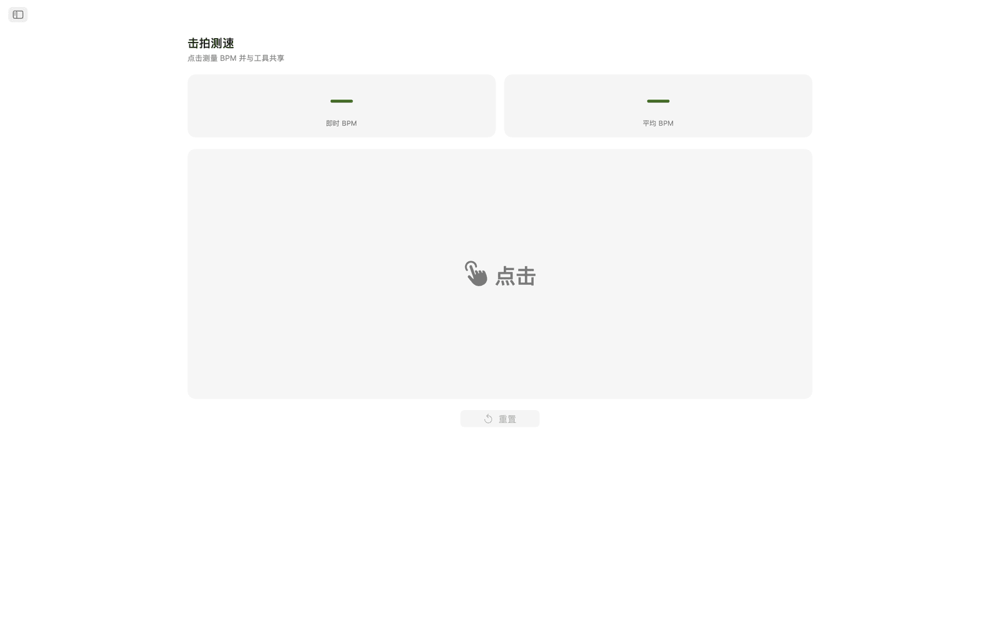
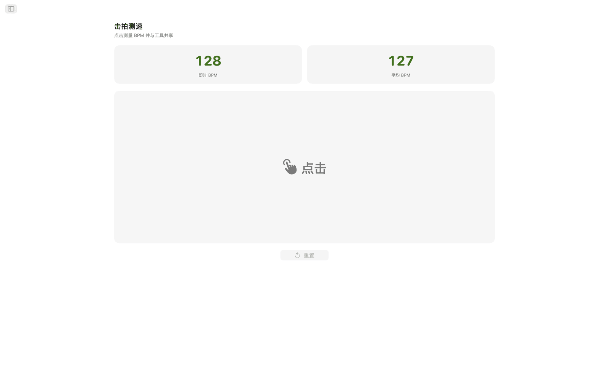
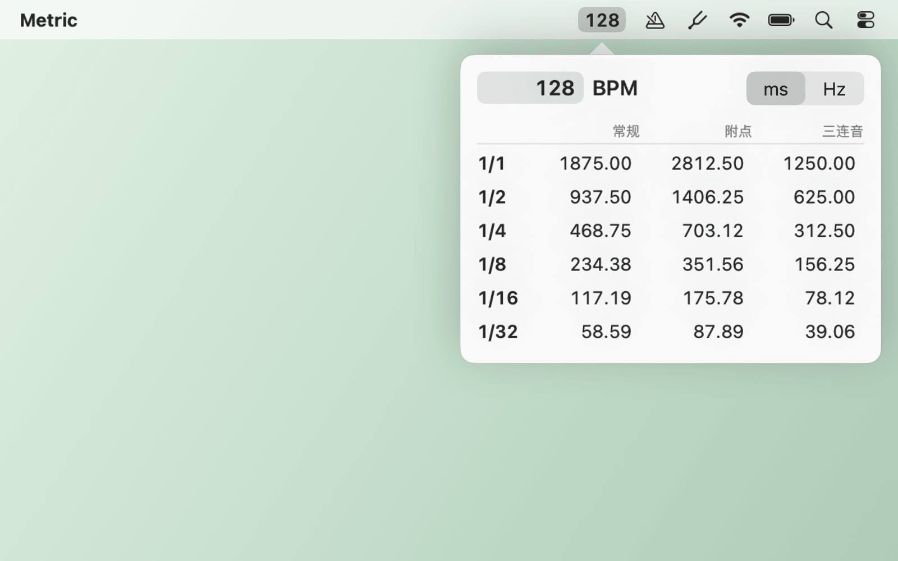
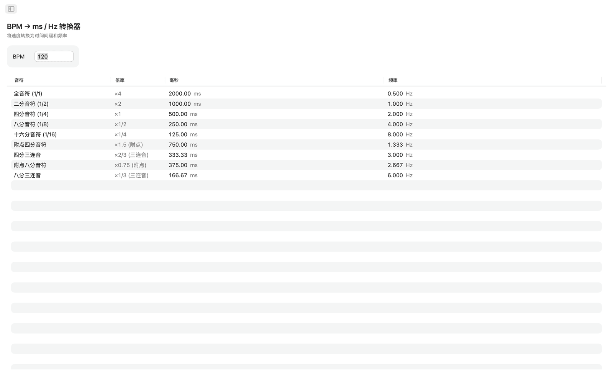
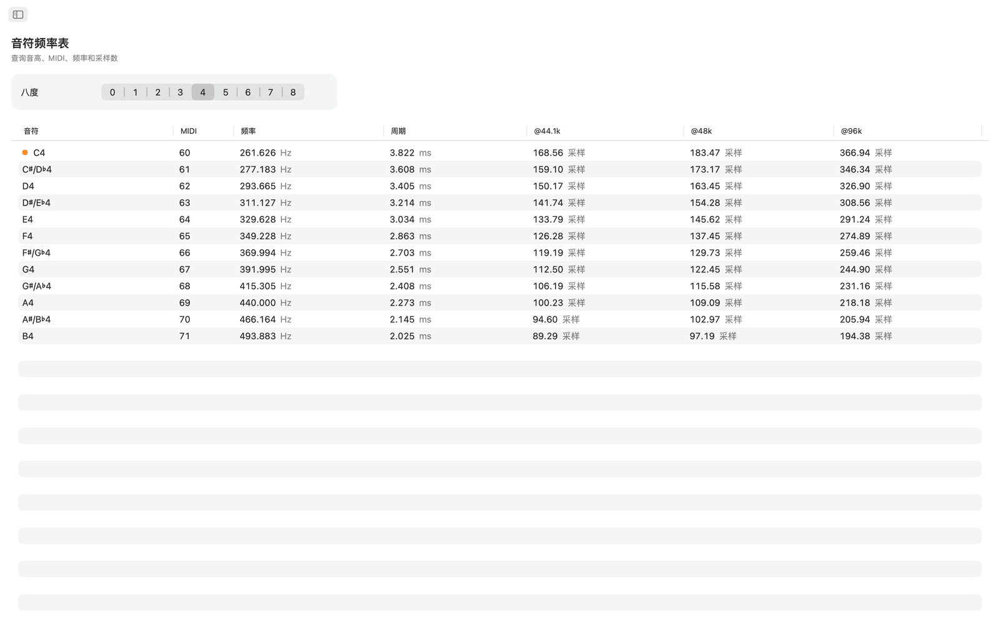
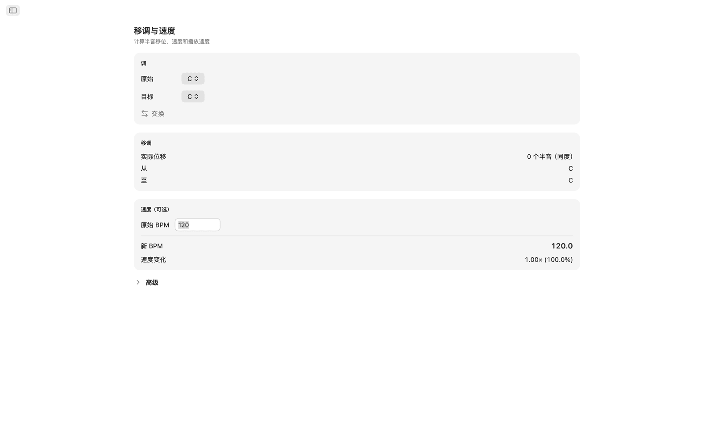
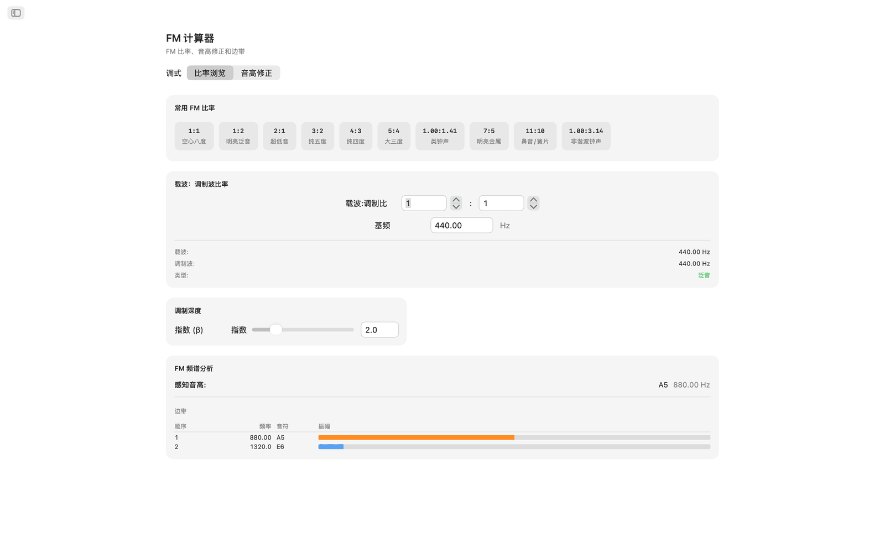
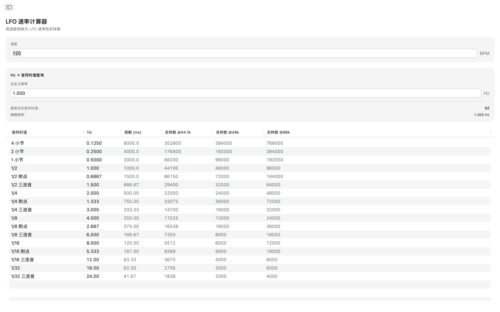
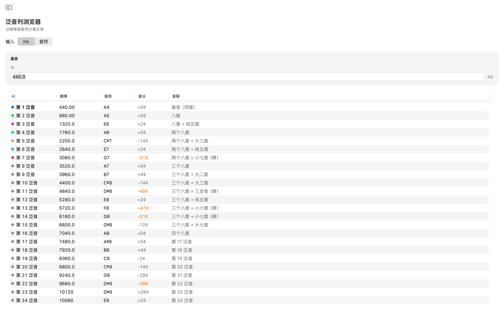
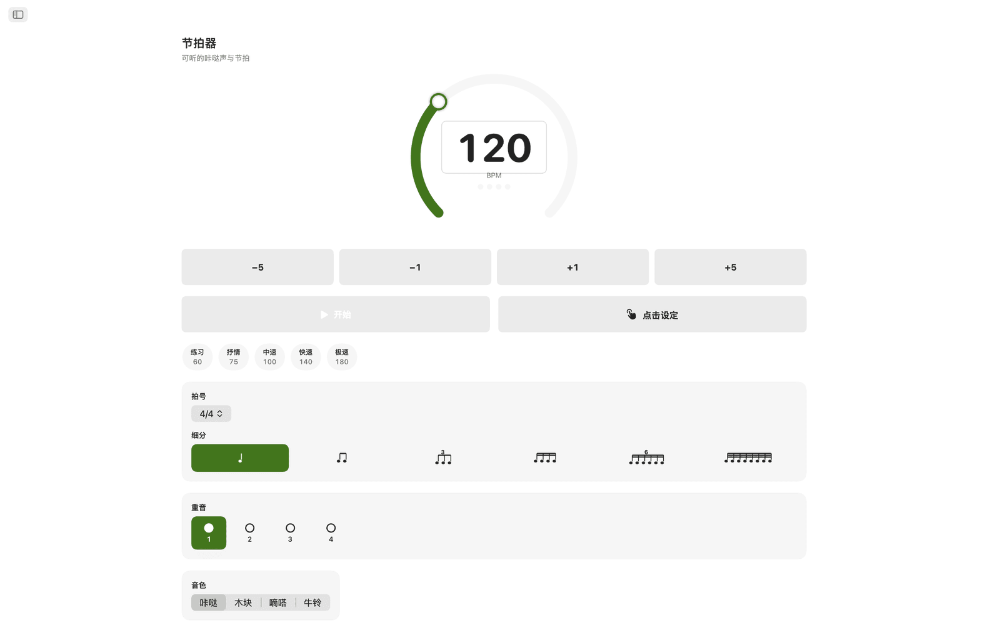

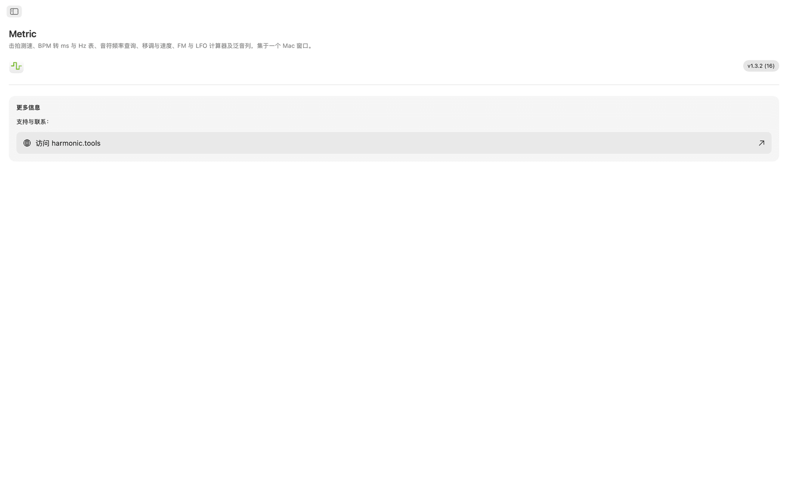
功能特色
- 节拍器配有速度旋钮、点击设定速度、拍号、细分和可视节拍指示器。
- 点击较大的击拍区域测量速度。Metric显示上次点击的BPM和最多八次点击的滚动平均值，任一读数都可一键发送到BPM转换器、移调或LFO速率工具。
- BPM → ms / Hz转换器根据输入的速度给出全音符、二分音符、四分音符、八分音符和十六分音符的标准、附点和三连音值。每行显示毫秒和Hz频率，设置延迟、混响预延迟或侧链时间时无需计算器。
- 音符频率表列出从C0到B8的全部108个半音音符。每个音符显示MIDI编号、Hz频率、毫秒周期，以及44.1 kHz、48 kHz和96 kHz的采样数。中央C有标记。基于A4 = 440 Hz。
- 移调时，选择原调和目标调即可看到半音偏移、音程名称和精确的DAW移调值。再填入原始BPM，Metric会算出新速度和播放速度比率。音分滑块（±100）和跨越两个八度（±24半音）的速度滑块用于微调。
- FM计算器有两种模式。比率探索器根据基频设置载波和调制波比率，提供十种FM预设，从空心八度（1:1）到非谐波铃声（1:π）。音高修正模式反向工作：选择目标音符即可获得精确的载波和调制波频率。两种模式都显示最多十个分音的边带表，含频率、最近音符和由调制指数滑块驱动的色彩编码振幅。
- LFO速率计算器把任意BPM转换为17种音乐细分的LFO速率，从四小节到1/32三连音。每行显示Hz、毫秒周期以及44.1 kHz、48 kHz和96 kHz的每周期采样数。反向查询可输入任意Hz值，找到最接近的音乐细分并显示误差。
- 泛音列探索器从频率或任意音符开始，列出前32次泛音的频率、最近音名、音分偏差和音程标签。低阶泛音以颜色编码，大于30音分的偏差会高亮，因此很容易发现非谐波内容。
共享的速度与调音基准
测一次速度，BPM转换器、移调和LFO速率工具就都使用这个实时BPM。音符频率、FM计算器和泛音均以A4 = 440 Hz为准。
Siri、Shortcuts与小组件
让Siri启动或停止节拍器、设定BPM、击拍测速、将BPM转换为毫秒、查询音符频率或移调速度。每个工具也都是Shortcuts操作，BPM小组件让您的速度常驻通知中心。
菜单栏工具
无需打开 App，即可在菜单栏击拍测速。右键单击可查看延迟时间（ms 或 Hz），还能输入任意速度。节拍器和音高项目为可选，另有仅菜单栏模式和登录时打开的设置。
在桌面上
- 完全离线运行，无需账户、无广告、无追踪
- 原生macOS应用，侧边栏导航
- 深色模式感知界面，跟随系统外观
- 44.1 kHz、48 kHz和96 kHz的采样数
- 可调整窗口大小，可与DAW并排使用
辅助功能
支持VoiceOver（旁白）和语音控制，也可使用键盘操作：方向键和空格键。
Metric可免费试用7天。试用结束后，一次性购买即可获得完整功能，无订阅。